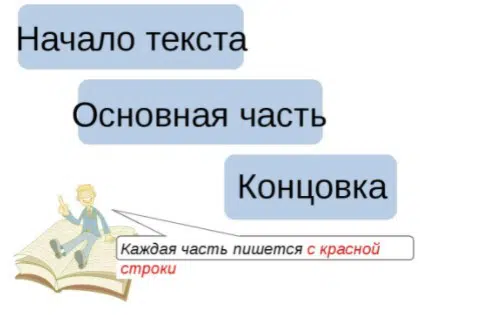

Information on the sites is regularly updated, new articles are uploaded, which should attract the attention of readers. But in order for clients to continue reading materials, and not switch to other resources in search of a simpler presentation, the content must be structured. The structure of the text is the design of the article, which improves the perception of the material.
External text structure
How to structure the text? You should start with the title. It should be catchy so that users want to know what the article is about. The title should reflect the main idea of the text.
No less important for the reader is the introduction. It should briefly and interestingly describe the idea of the text. Next is the main part. You should try to competently convey the material, which will reveal the essence of the issue and offer the optimal solution to the problems of each reader. You can use lists, attachments, and other techniques to help you better understand the material.
The final part of the sales text structure is the conclusion with a call to action. If you have an informational article in front of you, you can summarize the above and draw a general conclusion.
Optimal internal structure
The success of content lies in the correct formation of the internal structure. Elements combined with each other will be well perceived by users. At the same time, do not forget about readability, the use of words understandable to the target audience, and the uniqueness of the content. The structure is chosen depending on the context and the idea that the author wants to convey.
The structure of the description text should be logical. It is suitable for guides or descriptions of any products. Among the structural features, it is worth noting that each paragraph is a continuation of the previous one. You can describe certain characteristics, conduct an analysis, and then draw intermediate conclusions.
The next type is a pyramidal structure. It is used in copywriting when you need to write a news story or press release. The principle of the inverted pyramid becomes the basis. The essence of the issue is revealed at the very beginning of the article, after which more detailed information is gradually added. After reading the first paragraph, the reader will know exactly what the author wants to convey. In this case, the article may remain unread, because all the information is already clear. And for a more detailed study of the issue, it remains to read the remaining parts of the text.
An equally interesting copywriting structure is FAQ. It is used to write an interview or a page where questions and answers are offered. It consists of the following parts:
- Contents (in rare cases);
- Answers to the most popular questions of readers;
- Links for detailed reading of source articles.
You can use a commercial structure if you want to create a promotional article. It should contain a call to action - an offer to go to another page of the site, call the specified number or register. Some authors use the AIDA model to make writing easier. It consists of using four steps. In some cases, the text will not have a logical connection between paragraphs. The main thing is that the main objective of the article is fulfilled, which is to promote the goods or services. If the text is written competently and of high quality, the target audience will quickly expand, but no one will pay attention to aesthetics.
Structure of informal texts
In blogs, text structuring is based on the combined type. This way you can better convey information to readers and maintain interest while reading each part of the article. First, the blogger uses a pyramid structure, highlighting the main idea of the text. Next, it moves on to logic to consistently explain each issue raised on the topic.
If the author is just beginning to master the principles of creating texts, he may end up with a chaotic structure (in other words, a vinaigrette when the manipulations with the material are quite inept). Users will not be able to grasp the main idea, so they are likely to move on to reading more understandable materials. But if the author wants to mislead readers, and the purpose of the article is to discredit or sabotage, then such a structure will become more suitable.
Structured text will quickly gain the trust of users. They will know for sure that in the specified content they can get answers to their questions, learn the rules for choosing products, or read interesting facts on the chosen topic. When you understand which text and its structure are more preferable for your site, your resource ranking will increase much faster.